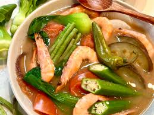

This page is all about Sinigang.
Just a brief discussion on how Sinigang has become the most popular food in the philippines
Sinigang is a traditional Filipino soup or stew known for its tangy, sour broth, typically flavored with tamarind. It is a beloved comfort food in the Philippines and is made with various meats (like pork, beef, shrimp, or fish) and vegetables, including water spinach (kangkong), eggplant, and radish.
Ingredients:
- 1 lb (450g) pork shoulder or belly, diced into small cubes
- 1/4 lb (115g) pork liver, diced into small cubes (optional)
- 2 medium potatoes, peeled and diced
- 1 large carrot, peeled and diced
- 1/2 cup green peas (optional)
- 1 small red bell pepper, diced
- 1 small green bell pepper, diced
- 1 medium onion, chopped
- 4 cloves garlic, minced
- 2 medium tomatoes, chopped
- 1/4 cup soy sauce
- 1/4 cup tomato sauce
- 2 cups water or chicken broth
- 1-2 tbsp cooking oil
- 1-2 bay leaves
- Salt and pepper to taste
- 1 tbsp sugar (optional)
- 1/2 tsp paprika or annatto powder (optional, for color)
- 1 tbsp raisins (optional)
Instructions;
- In a large pot, bring the water to a boil.
- Add the pork pieces and boil for 5-10 minutes, skimming off any scum that rises to the surface.
- Add the quartered onion and tomatoes to the pot.
- Lower the heat and let it simmer for about 30 minutes, or until the pork is tender.
- Add the taro and let it cook for about 10 minutes.
- Once the taro is partially cooked, add the radish, eggplant, and okra.
- Simmer until the vegetables are tender, about 10-15 minutes.
- Stir in the tamarind soup base mix, or if using fresh tamarind pulp, add it directly to the pot.
- Adjust the sourness by adding more tamarind mix or pulp, according to your taste preference.
- Add the fish sauce, and season with salt and pepper to taste.
- Drop in the green chilies and let the soup simmer for another 5 minutes.
Boil the Pork:
Add Aromatics:
Add Taro and Vegetables:
Sour the Broth
Season:
Add Water Spinach: